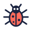

Two modes, one system
Pages follow the visitor's system setting by default. The mode switch overrides it and remembers the choice; picking System again goes back to following the device. Both modes are shown here side by side, whatever this page is set to.
Daybreak
Light. Warm paper, sunny accents, Fredoka headings.
Deep Space
Dark. Calm night sky, soft accents, Space Grotesk headings.
How it works: tokens.css sets Daybreak on :root, switches to Deep Space under prefers-color-scheme: dark, and lets <html data-theme="light|dark"> override both. Add class="mode-daybreak" or class="mode-deep-space" to pin any block to one mode.
Type scale
Headings use Fredoka in Daybreak and Space Grotesk in Deep Space through var(--display). Body is Nunito Sans; code is JetBrains Mono.
Spacing
Corners
Components
Live, from components.css. Switch modes at the top to see each one change.
Button
Chip
Tag
Switch
Stat
Since 2009
Engineers, QA, design
Bubble
Icons and mascot
32 by 32 line icons with 2.4px round strokes. Files live in icons/.

How to use it
The design system behind sbmadhav.com: professional enough for recruiters, fun enough for kids. Every new page should feel like part of the same site, in both color schemes, in both grown-up and kid mode.
Start a new page
- Copy
template.htmlto the new page's folder (for example/projects/index.html). - Keep its
<head>as is: the theme script, the Google Fonts link,/design-system/tokens.cssand/design-system/components.css, in that order. - Write every piece of copy twice:
<span class="pro">…</span><span class="kid">…</span>. - Build from the components below; add page-specific styles with tokens only (
var(--coral),var(--space-6),var(--radius-lg)), never raw hex. - Add the page to the Explore menu: one entry in
PAGESat the top of/assets/explore.js(path, icon, grown-up and kid title and one-line description). - Check both schemes (sun/moon button), kid mode, a 390px-wide phone, and reduced motion before publishing.
Files
| File | What it is |
|---|---|
tokens.json |
The source of truth: every color (both schemes), type style, spacing step, radius and shadow, each with a usage note. |
tokens.css |
The same tokens as CSS custom properties, with Daybreak as default and Deep Space for prefers-color-scheme: dark or data-theme="dark". Generated by build.py. |
components.css |
The md- components plus page basics (md-page, md-wrap, md-section, md-band, md-grid) and the kid-mode .pro / .kid swap. |
template.html |
A starter page wired up with the color mode picker and kid mode. |
index.html |
The reference page at /design-system/: color modes side by side, type, spacing, live components, icons and these guidelines. Generated. |
build.py |
Regenerates tokens.css and index.html from tokens.json and this README: python3 design-system/build.py. |
icons/ |
The 18 line icons and Bolt the mascot as SVG files. |
The interactive version of this system, with live previews of every component, is kept privately in Claude.
Principles
- Two audiences, one page. Every piece of copy has a grown-up version and a kid version. The layout never changes between them; only the words do.
- Two schemes, two personalities. Daybreak (light) is a warm, sunny paper notebook. Deep Space (dark) is a neon night sky. They should surprise people with how different they feel, while every component stays in the same place.
- Friendly, never childish. Rounded shapes, chunky borders and a solid "ledge" under controls make things feel touchable. Restraint in copy and layout keeps it professional.
- Play is opt-in. Music, motion and games never start on their own. Everything respects reduced-motion settings.
- Show, then tell. Prefer an interactive demo (Brain Lab, Design Lab) over a paragraph that explains an idea.
Content fundamentals
- Voice: first person, warm, plain words, dry humor in grown-up mode ("Zero-defect release. Principal engineer energy."), wonder in kid mode ("Whoa! We just blasted into deep space!").
- Never use em dashes. Use a period, comma or colon instead.
- Short. Ledes are one or two sentences. Card descriptions fit in two lines.
- Grown-up copy names real things: titles, metrics, technologies. Kid copy names what it does: "builds robot helpers for a really big bank."
- Sentence case for headings and buttons. Uppercase only for kickers (
kickerstyle). - Numbers in stats are big and specific:
17,2 → 25,+25%,$70M+.
Color
Use tokens, never raw hex. Each token has a Daybreak and a Deep Space value; switching scheme swaps every value at once. Every pairing below meets WCAG 2.1 AA in both modes: 4.5:1 for text, 3:1 for control borders, focus rings, icons and chart marks.
| Role | Token | Daybreak | Deep Space |
|---|---|---|---|
| Page ground | bg |
warm cream | near-black ink blue |
| Section bands | bg-alt |
peach | deep ink blue |
| Cards | card |
white | dark slate, slightly translucent (blur behind) |
| Text | ink / ink-muted |
navy / slate | soft white / cool gray |
| Hairlines (decorative) | line |
sand | slate |
| Control border | edge |
navy | periwinkle |
| Control ledge | ledge (in shadow-ledge) |
navy | muted indigo |
| Signature fill | coral |
coral | soft coral |
| Success fill | teal |
teal | aqua |
| Highlight fill | sun |
gold | soft lime |
| Info fill | sky |
blue | light blue |
| Play fill | plum |
lavender | soft lavender |
| Text, icons, marks | coral-strong, teal-strong, sun-strong, sky-strong, plum-strong |
deep shades | same as the fill |
| Text on accent fills | on-accent |
navy | near-black |
| Focus ring | focus |
alias of sky-strong |
alias of sky-strong |
Page background is a gradient, not a flat fill: a soft sun glow top right and a faint sky glow left in Daybreak; faint lavender, aqua and coral haze in Deep Space. It ships as --page in tokens.css; use background: var(--page); background-attachment: fixed; on body.
How the colors stay accessible
The system follows the approach Stripe describes in Designing accessible color systems: every hue gets the same few lightness levels, so any color at a given level has the same contrast as every other hue at that level. Pick a level by job, not by hue, and contrast takes care of itself.
| Level | Tokens | Job | Rule |
|---|---|---|---|
| Fill | coral, teal, sun, sky, plum |
Buttons, tags, chips, highlights, tile backgrounds | Always carries on-accent text (at least 4.6:1). Never text on bg. |
| Strong | *-strong |
Text, links, icons, chart marks, status labels | At least 4.5:1 on bg, bg-alt and card. |
| Soft | color-mix(in srgb, var(--x) 14%, var(--card)) |
Tinted panels, badges, icon tiles | Text on it is ink or the matching *-strong. |
Measured contrast (Daybreak / Deep Space, on bg):
| Pairing | Daybreak | Deep Space |
|---|---|---|
ink |
14.3 | 17.0 |
ink-muted |
5.6 | 8.9 |
coral-strong |
5.4 | 8.9 |
teal-strong |
5.8 | 11.1 |
sun-strong |
6.3 | 15.4 |
sky-strong |
5.9 | 9.7 |
plum-strong |
6.4 | 9.0 |
edge (controls) |
14.3 | 5.6 |
focus |
5.9 | 9.7 |
on-accent on the lightest fill / darkest fill |
9.6 / 4.7 | 15.4 / 8.9 |
State rules
- Hover: buttons lift (transform and a deeper ledge); colors stay the same. Chips fill with sun and switch text to on-accent. Links keep their color and gain an underline.
- Pressed or selected: fill with ink, text flips to bg (14.3:1 / 17.0:1).
- Focus: 3px focus outline with a 3px offset, on every interactive element.
- Disabled: 45% opacity. Disabled controls are exempt from contrast rules, but never rely on disabled styling alone to explain why something is unavailable.
Accent rules
- Fills carry on-accent text; text, icons and chart marks use *-strong. White text on any fill fails and is not allowed.
- Deep Space is calm by default: purple and pink appear as soft lavender (plum) and soft coral (coral) accents, not as neon glows or gradients. Use plum sparingly, never as the lead accent.
- No more than five colors in one composition. One accent leads; others support.
- Section tags take one accent each: sun for About, sky for Brain Lab, coral for Bug Hunt, plum for games, teal for Journey.
- line is decorative. A control's boundary must come from edge (or a fill with at least 3:1 against its ground).
Typography
Four families, all from Google Fonts:
<link href="https://fonts.googleapis.com/css2?family=Fredoka:wght@500;600;700&family=Space+Grotesk:wght@500;600;700&family=Nunito+Sans:opsz,wght@6..12,400;6..12,600;6..12,700&family=JetBrains+Mono:wght@500&display=swap" rel="stylesheet">
- Display is Fredoka in Daybreak and Space Grotesk in Deep Space.
tokens.cssswaps it through one variable,--display; every heading usesfont-family: var(--display). This font swap is a big part of why the two schemes feel so different. - Nunito Sans for all body text, buttons and labels.
- JetBrains Mono for agent thoughts, code, costs and disclaimers.
- Headings are weight 600, tracked in slightly (-0.01em; -0.025em in Deep Space). Body is 17px at 1.6.
- Highlight one word in a hero heading with a
sununderline band (Daybreak) or a coral-to-teal gradient fill (Deep Space). Use it once per page.
Layout and spacing
- Content max width
content-max(1120px), gutterspace-6(24px),space-4(16px) on phones. - Every section:
space-section(72px) top and bottom padding; alternate plain sections withbg-altbands that have a 1pxlinetop and bottom. - Section header: a tag, a
heading, then aledeinink-mutedat most 40em wide, thenspace-7(28px) before content. - Cards in grids: 4 across on desktop, 2 under 980px, 1 under 560px.
- No horizontal scroll at 390px. The sticky header collapses its nav links under 1180px and keeps the scheme, music and kid-mode controls.
Shape and depth
- Radius ladder:
radius-sm12,radius-md16,radius-lg22,radius-xl28,radius-pill. - Raised controls (buttons, chips, palette blocks, game boards) get a 2px
edgeborder and a solidshadow-ledge. They lift on hover and press down on click. - Cards and panels get a 1px
lineborder,shadow-card, and lift 4px with a tiny tilt (-0.4deg) on hover. - Deep Space adds
backdrop-filter: blur(8px)to cards and controls so the starfield shows through softly.
Motion
- Gentle and looping: Bolt bobs (3.4s), planets drift (45 to 130s per crossing), stars twinkle, the hero blob morphs (12s).
- Springy UI: toggles and level nodes use
cubic-bezier(.5,1.6,.5,1). - Sections fade up 18px on first scroll into view.
prefers-reduced-motion: reduceturns all of it off. Nothing essential may depend on motion.
Interaction patterns
- Kid mode: write both versions side by side as
<span class="pro">…</span><span class="kid">…</span>;body.kidmodeswaps them. Remember the choice;?kidin the URL starts in kid mode. - Color modes: Daybreak (light) and Deep Space (dark). Pages follow the visitor's system setting by default. The
md-modespicker (System, Daybreak, Deep Space) overrides it and saveslightordark; System clears the override. Setdata-themefrom a tiny inline script in<head>to avoid a flash. Pin any block to one mode withclass="mode-daybreak"orclass="mode-deep-space". - Explore menu: every page has an Explore button (Star map in kid mode) that opens a panel listing every page as a card, jump links to the home page's sections, and LinkedIn, GitHub and Install app. It slides in from the right on desktop and up from the bottom on phones. The page list lives in one place,
/assets/explore.js. - Bolt (the robot mascot) reacts to actions in a speech bubble under him. A tap-hint pill and a halo show until the first click.
- Music is generated in the browser, never auto-plays, and pauses when the tab is hidden. Games may take over the music while they run and give it back after.
Iconography
- Inline SVG
<symbol>sprites on a 32×32 grid, 2.4px round-capped strokes, no fills except small solid details; stroke usescurrentColorin code. - Shown on icon tiles: a 54px
radius-mdtile filled with the accent at 18% and the icon in the full accent. - Illustrations (planets, rockets, astronaut, Bolt) use flat fills with a 3 to 5px navy outline.
- No emoji in the UI. No brand logos of other companies.
Accessibility
- Text meets 4.5:1 in both schemes:
inkandink-mutedonbg,bg-altandcard. - Focus:
outline: 3px solid var(--sky); outline-offset: 3px. - Toggles use
role="switch"andaria-checked; chips and toggle buttons usearia-pressed; live results usearia-live="polite". - Every game and animation has a still, keyboard-usable path.
Components
Button
Classes: md-btn, md-btn--primary, md-btn--sm.
A pill with a 2px edge and a solid ledge underneath that lifts on hover and presses down on click.
- Primary (
md-btn md-btn--primary): one per view, the main call to action. Coral in Daybreak; a coral-to-plum gradient in Deep Space. Label inon-accent. - Secondary (
md-btn): card background. Use for every other action. - Small (
md-btn--sm): inside tools and games (Undo, Clear, Reset). - Labels are verbs in sentence case and can have kid and grown-up versions ("See how my agents think" / "Peek inside a robot brain").
- Icons go before the label at 18px.
- The consumer provides the label, the click handler and
disabledwhen the action is not available.
Chip
Classes: md-chip with aria-pressed.
A pill-shaped choice for picking one option from a small set: Brain Lab questions, Design Lab scenarios.
- Use
aria-pressed="true"on the selected chip; it fills withinkand its text flips tobg. - Hover fills with
sunandon-accenttext. - Keep labels under about 30 characters; they wrap as a row with
space-2gaps.
Tag
Classes: md-tag, md-tag--sky|coral|plum|teal.
The small colored label that opens every section, above the heading.
- One accent per section:
sun(default),sky,coral,plum,teal. Pick by meaning: play is plum, debugging is coral, thinking is sky, career is teal. - Text is
on-accentin the display face at 14px. It can have kid and grown-up versions ("Architect Mode" / "Code Quest"). - One tag per section; never inline in body text.
Card
Classes: md-card, md-icon-tile.
The default container: white (Daybreak) or dark slate (Deep Space), 1px line border, radius-lg, shadow-card, space-5 padding.
- Optional icon tile on top: 54px,
radius-md, filled with the card's accent at 18% (color-mix(in srgb, var(--teal) 18%, transparent)) with the icon in the matching*-strongcolor. - Heading in
card-title; description insmall,ink-muted, two lines or fewer. - Lifts 4px and tilts -0.4deg on hover. Use in grids of 2 to 4.
Stat
Classes: md-stat with md-kicker, md-value, p.
A metric tile: kicker label, a big number in the stat style, and an optional one-line note.
- Numbers are specific and short (
17,2 → 25,$70M+). Put the unit in the number, not the label. - Use 2 to 4 in a row. Scoreboards in games use the same tile.
- The note is
ink-mutedat 14px; give kid mode its own wording.
Switch
Classes: md-switch with md-track and md-knob, role="switch".
The on/off pill used for kid mode, with a springy knob.
role="switch"andaria-checkedcarry the state; the track fills withsunwhen on.- The label names the mode, not the action. Shorten it on phones ("Kid mode").
- Turning kid mode on swaps every
.prospan for its.kidtwin and gets a confetti burst.
Bubble
Classes: md-bubble.
Bolt's speech bubble: card background, 2px edge, 18px corners, ledge shadow and a pointer toward the speaker.
- Place it under Bolt with the pointer up, never over content or photos.
- One or two short sentences, in the current mode's voice. Auto-hide after about 4 seconds.
- Announce it with
role="status"andaria-live="polite".
Icons
The line icons from sbmadhav.com, exported from its inline SVG sprite. 32×32 grid, 2.4px round-capped strokes, drawn here in ink navy (#1C2541).
- On the site they live in a
<svg><defs><symbol>sprite and usecurrentColor, so they take the accent color of their tile or text. Copy the paths into a sprite rather than loading the files inicons/with<img>when the color must change. - Pair each with a meaning, not a decoration: agent (agentic AI), voice, interface, shield (responsible AI), briefcase (consulting), hardware, sneaker, health, bank, mystery (what's next), bug, star (goal or current level).
Mascot
Bolt, the site's original robot mascot: teal body, cream face, coral antenna and cheeks, gold chest, navy outlines.
- Bolt speaks through the Bubble component and reacts to what people do (switching schemes, playing music, winning games).
- Keep Bolt's colors fixed in both schemes; in Deep Space add a faint glow (
drop-shadow(0 0 10px rgba(182,164,247,.22))). - Never put words on Bolt or change his shape; poses come from small transforms (bob, tilt, eyes following the pointer).